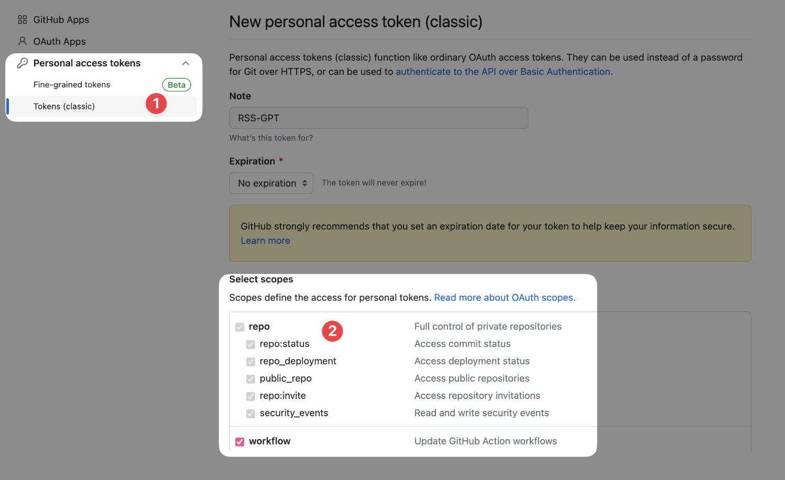
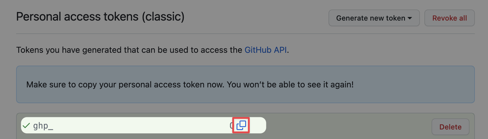
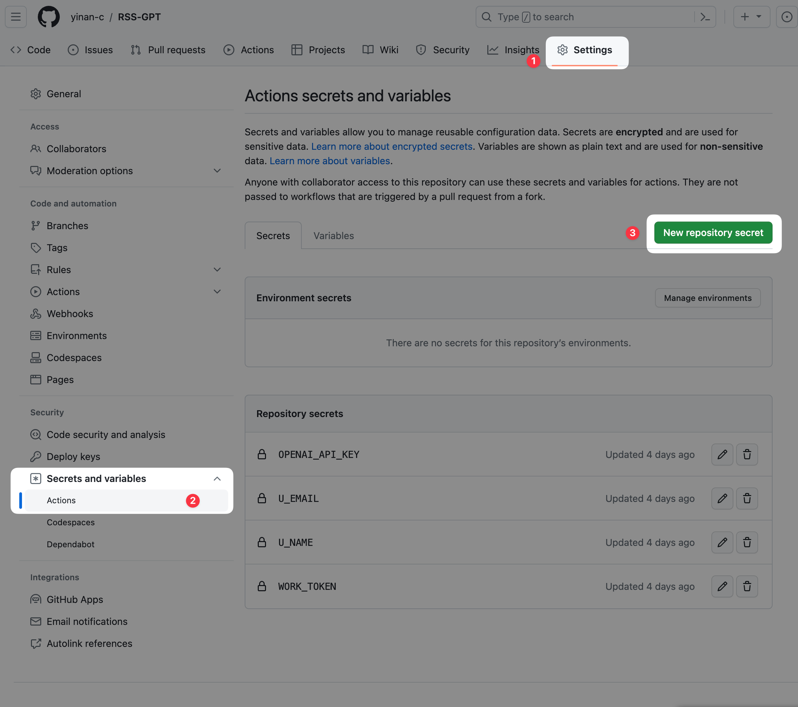

RSS-GPT Configuration
Introduction
Prerequisites
- GitHub account
- OpenAI API Key (get it at OpenAI website)
1. GitHub Actions deployment
The main idea is to use GitHub Actions to run Python scripts periodically, the script calls OpenAI API to generate summaries and append them to original RSS entries, then generate a new xml file, and commit it to the repo.
All contents in the repo folder are deployed on GitHub Pages via GitHub Actions, so you can access the xml file via your GitHub Pages URL, and subscribe to it like normal RSS feeds in any RSS reader.
If you don't want to deploy on GitHub Pages, you can also subscribe to the raw xml file in the repo (URL starts with raw.githubusercontent.com), e.g. the xml file URL of this repo is https://raw.githubusercontent.com/yinan-c/RSS-GPT/main/rss/brett-terpstra.xml.
1.1 Fork the project
Go to the project RSS-GPT and fork it to your own repo.
1.2 Three Repo Secrets
U_NAME
The username used for git commit, usually your GitHub username. Your username is the last part of your GitHub homepage URL, e.g. https://github.com/yinan-c, the username is yinan-c.
U_EMAIL
The email used for git commit, it's the email you used to register GitHub, can be found in GitHub Settings page.
WORK_TOKEN
Since the project involves using scripts to operate repo contents, permissions are needed for the script to modify files in the repo. Apply for a Repository Secret token:
Click your avatar at top right of GitHub homepage, choose "Settings" to go to settings page.
Click "Developer settings" at bottom of left sidebar.
Click "Personal access tokens" under "Developer settings", choose "Tokens (classic)", click "Generate new token (classic)" at top left.
Configure the new token:

Note: RSS-GPT
Select scopes: Check all options under "repo" and "workflow"
Expiration: Choose "No expiration"
Click "Generate token" at bottom.

Copy the token after clicking, make sure to copy it on this page, you won't be able to see the token after leaving this page. If you miss it, you'll have to generate a new one following the steps above.
1.3 Set Repository Secrets
Go to your forked repo, click "Settings" in top menu bar, then click "Secrets and variables" in left sidebar, choose "Actions", then click "New repository secret" at top right.

Add U_NAME, U_EMAIL, WORK_TOKEN as secrets to the repo, can only add one at a time:
Name: U_NAME, U_EMAIL, WORK_TOKEN
Value: Your username, email, and the copied token
Click "Add secret"
1.4 Grant required permissions
Enable GitHub Actions access to Pages:

Click "Settings"
Find "Pages" under "Code and automation" in left sidebar and click in
Set "Source" as "GitHub Actions", then click "Save"
2. Configure RSS sources to merge, filter and summarize
Go to the project, click "Code" in top menu bar, open the "config.ini" file, click the pencil icon at top right to edit code and configure your desired sources. Don't change the first two lines.
[cfg]
base = "rss/"
Then modify the target language, number of keywords, and summary length in the next 3 lines. The following code is feed-specific configs, format is:
[source001]: Feed ID, starts from 001 and increments, make sure IDs are unique to avoid errors.name = "brett-terpstra": Name of the generated feed, only letters (a-z A-Z), numbers (0-9), (-,_,.,~) allowed.url = "https://brett.trpstra.net/brettterpstra": Original RSS feed URL, can contain multiple feeds separated by comma.max = "10": Number of articles to summarize between refreshes. E.g. 10 means summarizing the latest 10 articles on each refresh. 0 means no summarization, returning original entries.
Next are optional filter configs, note all 3 must be set together or not set:
filter_apply = "title": Apply filter on "title", "article" (content) or "link".filter_type = "exclude": Filter type: "include", "exclude", "regex match" or "regex not match".filter_rule = "TextExpander": Filter text or regex.
Click "Commit changes" at bottom to submit edits.
3. Modify README output
Click "Code", open "main.py" file.
Click the pencil icon to edit code, go to line 289 and modify "https://yinan-c.github.io/" to your own GitHub Pages URL, change yinan-c to your username.
(Optional) Modify prompt at lines 113-129 based on your needs for better summaries.
Click "Commit changes" at bottom to submit edits.
4. Test GitHub Actions
Go to the project, click "Actions" in top menu bar, click "cron_job" and choose "Run workflow".
Green check mark means successful run, red x means failure, usually due to errors in edited ini file or incorrect permissions/tokens. Double check if errors occur.
If no errors, you can see your feeds on the project README page.
Click "View Rss-Translation" to go to the feed list page, left of -> is original URL, right is converted URL to subscribe like normal RSS feeds.
Notes
- Default run frequency is every 2 hours, modify
.github/workflows/cron_job.ymlline 7 to change, e.g.
- cron: '0 */2 * * *' # run every 2 hours
- cron: '0 */1 * * *' # run every 1 hours
For more info on cron syntax, see crontab docs or GitHub docs.
My prompt is basically asking AI to extract keywords + summarize + auto-formatting. Formatting is not always perfect, and my prompt is not perfectly optmized for everyone. You can modify prompt at lines 113-129 based on your needs.
Regarding the usage of the OpenAI API, in order to minimize costs as much as possible, the following default measures have been adopted for this project:
Different models are selected based on text length, and if the text length exceeds 16k, the first 16k characters will be used with GPT-3.5 Turbo 16K.
Considering GPT-4 costs about 10 times more than GPT-3.5 Turbo, GPT-3.5 Turbo is used by default. If you want to use a different model, you can modify the model parameter passed to the
gpt_summaryfunction of lines 227-243 of main.py, e.g.model="your_model". Please refer to the OpenAI API Pricing for different prices of different OpenAI models.The script will read the xml files already existing in the rss/ folder. Existing articles will not be summarized again, so OpenAI API will not be repeatedly consumed.
If OpenAI releases more models in the future, I will choose the most suitable default model and update the code accordingly. If you have a better way to use AI or encounter any issues, feel free to email me.